今のあなたの状態に近いものはどれですか



01
疲労した脳は、最小コストでドーパミンを得られる スマホ画面を見るという行動を求めやすくなっています。 さらに画面の光が睡眠を促すホルモンを抑制し、 体は疲れているのに脳が覚醒する悪循環に陥っている可能性があります。
そんなヒトに
Scroll & Tap!


02
ストレスや代謝物の蓄積で脳のドーパミンが低下し、 動くコストがメリットを上回ると判断されている可能性があります。 この場合、副交感神経が優位になり、体が省エネモードになっている状態です。
そんなヒトに
Scroll & Tap!


03
限界レベルの疲れは、ケガや病気など心身が最悪の状態になることを防ぐためのものです。 また、現代特有の持続的なストレスからヒトを守るためのものとも言われ、 近年、免疫システムもこの疲れに関与している可能性があるとされています。
そんなヒトに
Scroll & Tap!